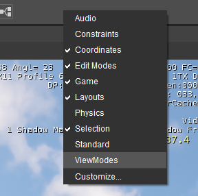
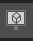
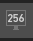
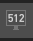
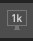

Overview
The ViewModes toolbar helps save time when debugging issues in your scenes.
To activate the ViewModes toolbar in CRYENGINE Sandbox, right-click on an empty space in the toolbar area. This will open a menu that will allow you to add additional toolbars to the UI .
Select ViewModes from the drop down menu and you will see that the ViewModes toolbar has been added to your Editor's UI.

This toolbar has been introduced to save you time by not having to remember a large number of CVars and commands.
Toolbar Breakdown
From left to right, all the buttons in the toolbar have been listed below along with a description of what they do. Additionally and for your reference the CVar being modified has also been included.
All but one of these buttons are toggles, on/off. Others, like the min_LOD will cycle between 6 options (0 -> 5) & back again to 0.
| No. | Icon | What it does | Cvar / command being used |
|---|---|---|---|
| 1 | Default normal rendering mode | r_DebugGBuffer = 0 | |
| 2 | Normals PBS debugview | r_DebugGBuffer = 1 | |
| 3 | Smoothness PBS debugview | r_DebugGBuffer = 2 | |
| 4 | Reflectance PBS debugview | r_DebugGBuffer = 3 | |
| 5 | Albedo PBS debugview | r_DebugGBuffer = 4 | |
| 6 | Lighting Model PBS debugview | r_DebugGBuffer = 5 | |
| 7 | Translucency PBS debugview | r_DebugGBuffer = 6 | |
| 8 | Sun Self Shadowing PBS debugview | r_DebugGBuffer = 7 | |
| 9 | SubSurface Scattering PBS debugview | r_DebugGBuffer = 8 | |
| 10 | Specular Validation PBS debugview | r_DebugGBuffer = 9 | |
| 11 | Default Material | e_DefaultMaterial = 1 | |
| 12 | Default Material with Normalmaps | r_TexBindMode = 6 | |
| 13 | Overlay Collision Proxies | p_Draw_Helpers = 1 | |
| 14 | Shaded Wireframe | r_ShowLines = 2 | |
| 15 |  | Full Wireframe | r_wireframe = 1 |
| 16 | Show Vertex Normals | r_shownormals = 1 | |
| 17 | Show Tangents | r_ShowTangents = 1 | |
| 18 |  | Texels Per Meter 256 | r_TexelsPerMeter = 256 |
| 19 |  | Texels Per Meter 512 | r_TexelsPerMeter = 512 |
| 20 |  | Texels Per Meter 1024 | r_TexelsPerMeter = 1024 |
| 21 | Colour coded LOD visualisation | e_DebugDraw = 3, -3, 0 (3=color + debugtext, -3=color only, 0=off) | |
| 22 | Minimum LOD cycle | e_LodMin = 0, 1, 2, 3, 4, 5 (cycle through the LOD states 0 - 5 (if available)) |
Further Reading
For more information about 1-10, see Debug GBuffer.
For more information about 18-20, see Texels Per meter.